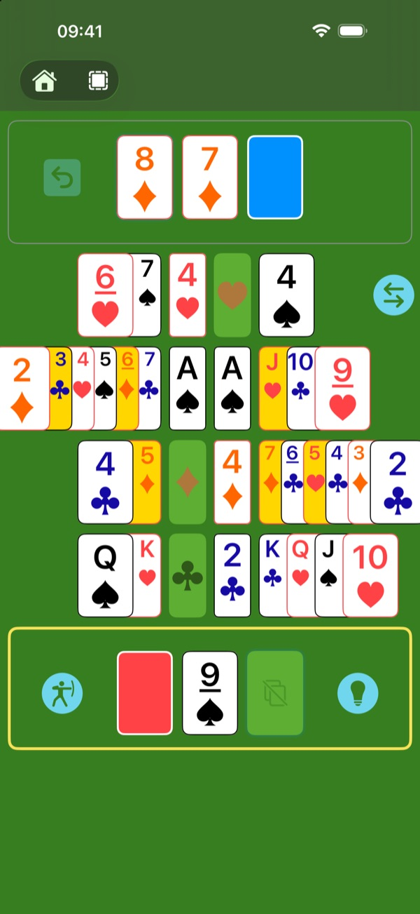
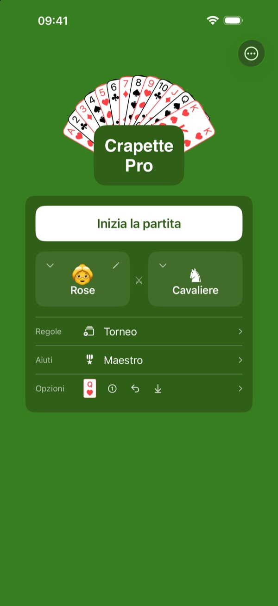
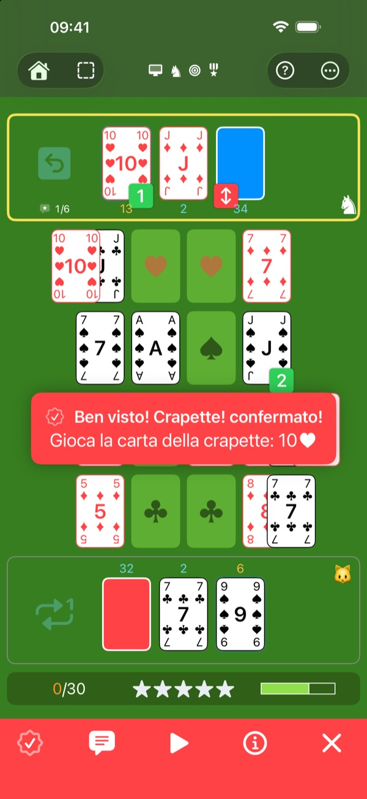
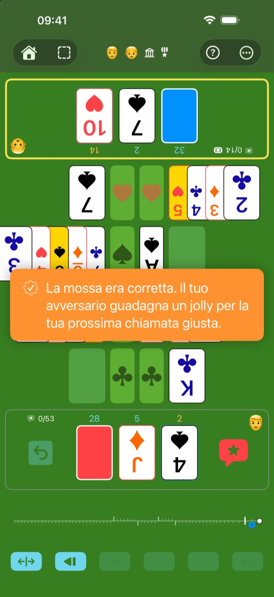
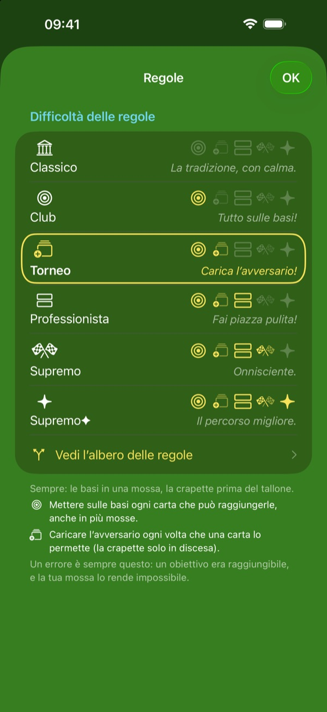
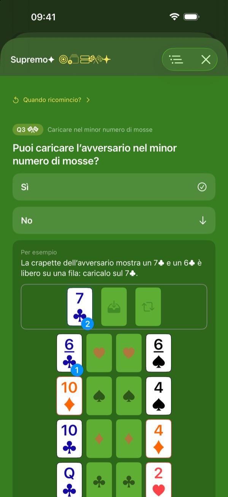
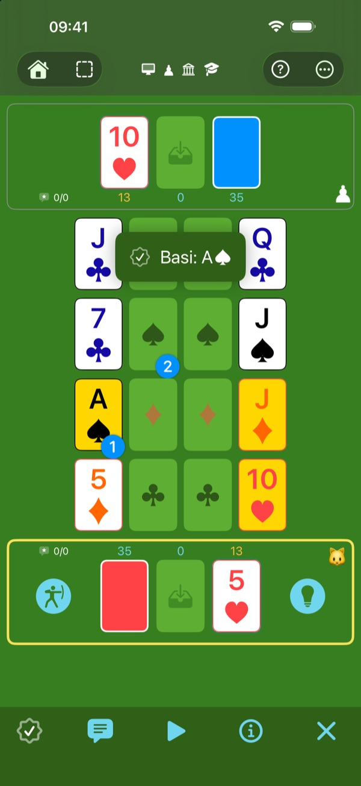
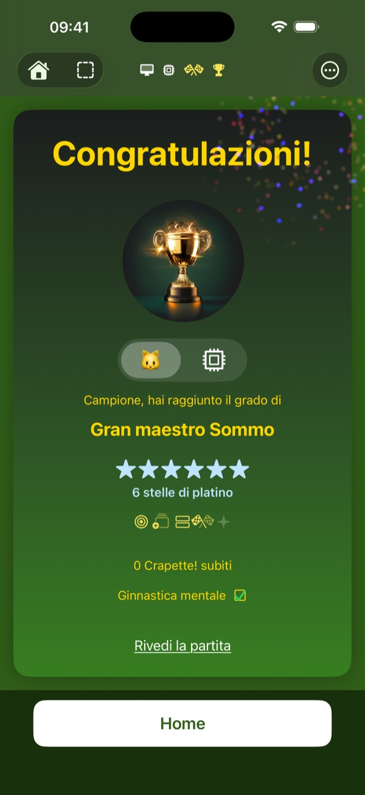
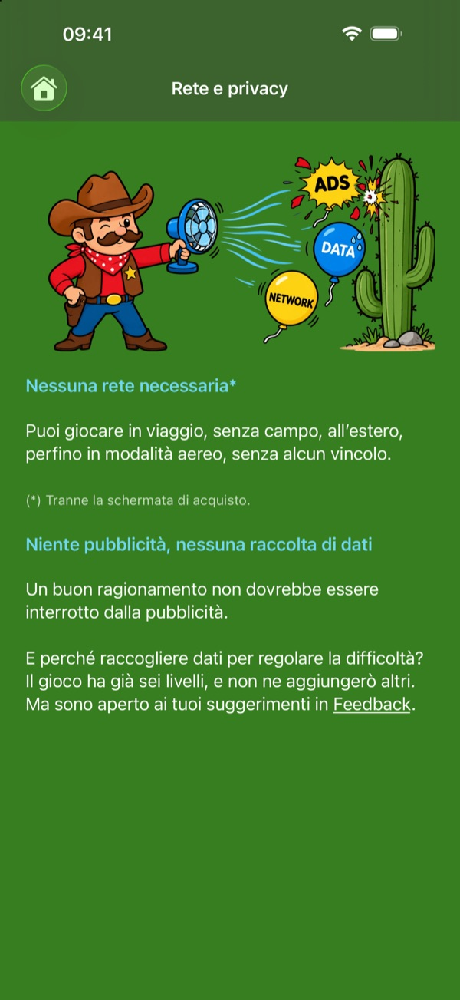
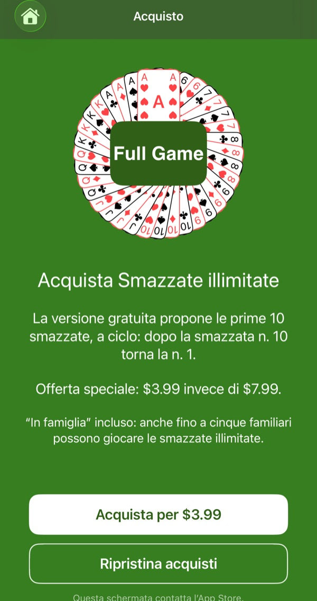

Il gioco che amavi da bambino
Senza la nonna che bara
Analizza, elabora una strategia, batti il gioco e diventa Gran maestro.

La Crapette che conosci. Forgiata nel fuoco della competizione.
Conosci la Crapette, Russian Bank in inglese: vince chi si libera per primo di tutte le sue carte. Qui la trovi così com’è, al livello Classico.
Per allenare osservazione e ragionamento, i livelli successivi aggiungono a poco a poco regole più esigenti. A ogni mossa, queste regole compongono un rompicapo: risolvilo ed eviti un Crapette!; risolvili tutti e punti ai punteggi migliori.

Componi la tua partita ideale.
Sei avversari: qualcuno di fronte a te, sullo stesso dispositivo, con l’arbitraggio che preferisci; oppure il computer, dallo Scudiero, che sbaglia spesso, all’Algoritmo, che non sbaglia mai.
Sei livelli di regole, dal gioco ufficiale fino a Supremo✦.
Tre livelli di aiuto: meno aiuti usi, più le tue stelle sono preziose, e più sono difficili da conquistare.
In tutto, 6 × 6 × 3 = 108 modi di giocare.

Un computer che sbaglia, apposta.
Lo Scudiero, il Cavaliere e il Re commettono errori, spesso, a volte o raramente: tocca a te scovarli e gridare Crapette!, proprio come contro un vero giocatore. E quando vuoi prendere fiato, l’Algoritmo non sbaglia mai: guardalo giocare.

Faccia a faccia, senza discussioni.
Due giocatori, un solo dispositivo posato tra di voi, il tavolo girato verso ciascuno. Scova l’errore dell’altro e grida Crapette!: il computer verifica, senza discussioni, oppure arbitra da solo, se preferisci. Ma attenzione: una chiamata sbagliata regala un jolly all’avversario.
Nipoti dall’occhio vivo, nonni di lunga esperienza: tutti ad armi pari.

Ogni mossa è un rompicapo.
Al livello Classico, quasi ogni mossa è permessa. A ogni livello, una regola in più riduce le mosse consentite, finché non resta che la strada migliore. Ogni mossa diventa un rompicapo: sta a te trovarne la soluzione.
- Classico — la Crapette tradizionale, con le sue due regole ufficiali (basi in una mossa, crapette prima del tallone).
- Club — porta sulle basi ogni carta che può raggiungerle.
- Torneo — carica la crapette dell’avversario.
- Professionista — libera il maggior numero possibile di file.
- Supremo — raggiungi l’obiettivo prioritario nel minor numero di mosse.
- Supremo✦ — tra due strade ugualmente brevi, scegli quella che rispetta anche le regole di priorità inferiore.

Ogni mossa si spiega.
Ogni Crapette! che ricevi, ogni suggerimento che chiedi ti mostra la mossa da giocare, e la regola che la impone.
L’albero delle regole mostra come le regole si incastrano: una domanda alla volta, nell’ordine del tuo livello, fino alla mossa giusta.

Allena la mente, in modo sano, a ogni età.
Osservare, riflettere, scegliere la mossa migliore tra quelle possibili: ogni partita fa lavorare la mente. Senza timer, ti prendi il tempo di pensare, e la difficoltà si adatta a te. E tutto giocando: ti alleni senza accorgertene.
Il gioco che un genitore può proporre a un bambino: riflessione, niente effetti lampeggianti, nessuna dipendenza. Le partite chiedono un vero sforzo: dopo una o due, i bambini corrono a giocare fuori.

Il campo di allenamento. Qui lo scopo è imparare.
Comincia al livello Classico, come Studente, con tutti gli aiuti. Le carte obiettivo indicano i traguardi possibili. Il suggerimento ti mostra l’obiettivo prioritario e la prima mossa per raggiungerlo. Mossa migliore gioca al posto tuo. Un dubbio su un pulsante? Tocca “?”: ogni elemento del tavolo si spiega. Affina il tuo senso tattico sul campo di allenamento.
Come una spada di legno da allenamento, Ops! ti lascia incassare i colpi senza farti troppo male: rigiochi la tua mossa, ma l’errore conta comunque.

I tuoi progressi, in gradi e stelle.
Il punteggio serve a motivarti e a misurare i tuoi progressi. Conquista gradi sempre più prestigiosi e stelle preziose.
La ricompensa più alta: il platino, per una partita senza errori.

Un’arena sotto i riflettori, per non perdere alcun dettaglio.
Un gioco pensato per essere leggibile: nemmeno la nonna avrà più scuse.
Scegli le tue carte: standard, alta visibilità, o alta visibilità sui quattro angoli. Quattro semi dai colori e dalle forme ben distinti: tutto resta leggibile, anche su uno schermo piccolo.

Un gioco costruito come un atleta.
- Rapido — in pochissimo tempo, il motore sa se la tua mossa è quella giusta.
- Leggero — circa 13 MB, si scarica in un attimo.
- Autonomo — nessuna rete necessaria per giocare (tranne al momento dell’acquisto, ovviamente).
- Discreto — il gioco non raccoglie alcun dato.
- Senza pubblicità — un buon ragionamento non va interrotto.
- Senza dipendenza — niente notifiche, nessuna serie da mantenere, nessun obbligo di giocare. Torni quando ne hai voglia.

La sabbiera senza limiti.
Nessun abbonamento. Tutto il gioco si prova gratis, senza limiti di tempo: tutti i livelli, tutti gli avversari, tutti gli aiuti. Costruisci tutti i castelli di sabbia che vuoi, ma sulle prime dieci smazzate, che tornano a ciclo.
Un unico acquisto apre nuove smazzate, all’infinito.